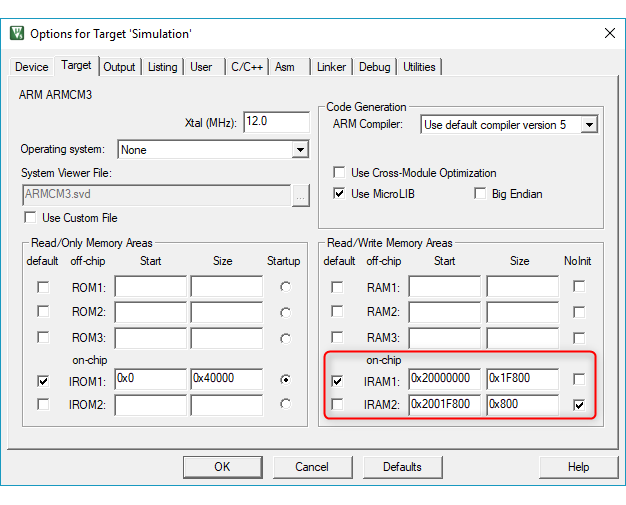
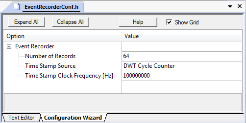
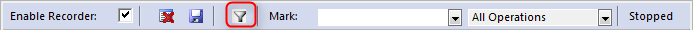

- Note
- The following steps explain how to enable views for static information and dynamic events in the µVision debugger. Other tools might use different ways to accomplish this.
For User Code:
- Add Event Recorder Component.
- [Optional] Locate the Event Recorder data to uninitialized memory to avoid overwriting the entries on program reset.
- [Optional] Set the correct initial time stamp.
- [Optional] Create a heartbeat to avoid timer overflow problems.
- Add Event Annotations in the C source to be able to stream dynamic event information.
- Create an SCVD file to Format Event Information that matches with application code.
For Pre-annotated Software Components:
The software packs for MDK-Middleware, CMSIS, CMSIS-FreeRTOS already contain the relevant *.SCVD files and the related event annotations in the C source code.
- Add Event Recorder Component to the project.
- Select a Debug variant for the middleware component to enable event information (for RTX5 select Source variant).
Add Event Recorder Component
To use the Event Recorder in an application, you need to:
- Select the software component CMSIS-View:Event Recorder using the RTE management dialog.
- Note
- Usually, you select the DAP variant. If you are using a simulation model (FastModel or Arm Virtual Hardware), you can select Semihosting to write the Event Recorder data into a file on the PC.
- Include the EventRecorder.h header file and add the event recorder initialization function to the source code:
:
#include "EventRecorder.h"
:
int main (void) {
:
HAL_Init();
SystemClock_Config();
MemoryBus_Config();
:
}
- Note
- By default, the Event Recorder uses the DWT Cycle Counter as a time stamp source. This is not available on Cortex-M0/M0+/M23. Change the configuration to use an alternative timer instead.
- For Keil RTX5 (version 5.4.0 and above), no call to EventRecorderInitialize is required. Instead enable Event Recorder Configuration - Global Initialization in the RTX_Config.h file. Refer to the CMSIS-RTOS2 - RTX v5 Implementation for more information.
Locate Event Recorder in uninitialized memory
For uninterrupted recording of program resets, the RAM for the Event Recorder component should be placed to a memory region that is not cleared (or initialized) by a system restart (reset).
- Note
- Make sure that you use normal, non-cacheable, and non-shareable memory for Event Recorder data.
Calculate memory requirements
The memory required for the Event Recorder data is calculated with the formula:
164 + 16 x Number_of_Records (defined by EVENT_RECORD_COUNT in EventRecorderConf.h)
In this example we configure 0x800 bytes (as it is easier) which can hold more than 64 records.
Create memory region
To setup this uninitialized RAM, use either Create memory region using linker script or Create memory region using µVision procedure.
Create memory region using linker script
If the linker script does not contain provisions for uninitialized memory section then, for respective toolchain, add the necessary section like described below:
Arm Compiler
for the Arm Compiler toolchain add the following code snippet to the linker script (.sct file), in the part specifying RAM sections (usually before Heap section):
RW_NOINIT <start_address> UNINIT 0x800 {
* (.bss.noinit*)
}
Note: <start_address> is the physical address in RAM where the section will start
Note: 0x800 is the size of the section, adjust that as necessary
GCC
for the GCC toolchain add the following code snippet to the linker script (.ld file), in the part specifying RAM sections (usually before Heap section):
.noinit (NOLOAD) :
{
. = ALIGN(4);
PROVIDE (__noinit_start = .);
*(.noinit*)
. = ALIGN(4);
PROVIDE (__noinit_end = .);
} > RAM
Note: this code snippet expects defined RAM memory region, if RAM region is not defined then adapt the script accordingly
Create memory region using µVision
To setup this uninitialized RAM in the µVision, follow the steps below:
- In the Options for Target dialog, on the Utilities tab, click on Settings for "Use Target Driver for Flash Programming". Note the "RAM for Algorithm" area:

- In the Options for Target dialog, define a Read/Write memory area that is not initialized and which does not overlap with the area from the first step.
For example, split IRAM1 into two regions. Reduce size of IRAM1 by 0x800 and create an IRAM2 area with start 0x2001F800 and size 0x800. Enable NoInit for this IRAM2 region.

- In the Options for Component Class 'CMSIS-View' dialog (opens with right-click on EventRecorder.c in the Project window), on the Memory tab, assign Zero Initialized Data to the IRAM2 region.

- Build the application to place the Event Recorder data buffers to uninitialized RAM. You may verify the generated scatter file:
; *************************************************************
; *** Scatter-Loading Description File generated by uVision ***
; *************************************************************
LR_IROM1 0x00000000 0x00040000 { ; load region size_region
ER_IROM1 0x00000000 0x00040000 { ; load address = execution address
*.o (RESET, +First)
*(InRoot$$Sections)
.ANY (+RO)
}
RW_IRAM1 0x20000000 0x0001F800 { ; RW data
.ANY (+RW +ZI)
}
RW_IRAM2 0x2001F800 UNINIT 0x00000800 {
EventRecorder.o (+ZI)
}
}
- Note
- If the Event Recorder data buffer is not in uninitialized memory, the Command window of the debugger displays: "Warning: Event Recorder not located in uninitialized memory!".
- Knowledgebase article 4012 explains how to create custom memory areas in uVision.
- If your RAM is not big enough to separate the Event Recorder area from the Flash programming area, make sure that you enable "Reset and Run" for the Download Function:
- If this still produces broken Event Recorder records after a reset, a power-cycle of the target system will help.
Time Stamp Settings
To avoid display problems in System Analyzer, set the Time Stamp Clock Frequency [Hz] to the initially expected value:

Event Recorder heartbeat
The Event Recorder timer is a 32-bit counter that can overflow. To avoid overflow problems, send a "heartbeat" event within the limits of this 32-bit counter.
Calculation Example
Assuming that your application is running at 168 MHz, you can calculate the time between two heartbeats like the following:
2^32 / 168000000 Hz = 25.57 s
So you need to generate an event every 25 s. This can be an event with an event ID that you don't need and thus filter from the display in Event Recorder or an event that you use to check if your application is still running.
Event Annotations
To to stream dynamic event information, insert calls to the Event Data Recording functions on relevant code locations:
These Event Data Recording functions receive as first parameter an id event identifier used for filtering and displaying. The macro EventID may be used to compose id values to include level and component numbers.
Example:
#include "EventRecorder.h"
int some_error = 0;
char string[10] = "MyTest";
void MyFunction (int parameter) {
;
if (some_error) {
return;
}
return;
}
int main (void) {
MyFunction (0x10);
some_error = 1;
MyFunction (0x60);
}
When executing this example in the µVision debugger, use the menu command View - Analysis Windows - Event Recorder to open the Event Recorder window. This should show the following output:

Format Event Information
You may create an *.SCVD (Software Component View Description) file to format the event output so that matches the application. The event output is created using the /component_viewer/events.
SCVD file example
<?xml version="1.0" encoding="utf-8"?>
<component_viewer schemaVersion="0.1" xmlns:xs="http://www.w3.org/2001/XMLSchema-instance" xs:noNamespaceSchemaLocation="Component_Viewer.xsd">
<component name="MyExample" version="1.0.0"/>
<events>
<group name="My Events Group">
<component name="MyApp" brief="My Application" no="0x00" prefix="EvrNetMM_" info="Network - System - Dynamic Memory Management"/>
</group>
<event id="1" level="API" property="MyFunction" value="parameter=%x[val1]" info="Event on start of MyFunction" />
<event id="2" level="Error" property="MyFunctionError" info="Event on error in MyFunction" />
<event id="3" level="Op" property="MyFunctionProcess" value="string=%t[val1]" info="Event on operation in MyFunction" />
</events>
</component_viewer>
In the µVision debugger, this *.SCVD file is specified in the dialog Options for Target - Debug - Manage Component Viewer Description Files. Click on Add Component Viewer Description File and add the related *.SCVD file.

The Event Recorder displays the events as shown below.

The described groups and events also show up in the filter dialog.
Software Component Variants
The software packs for MDK-Middleware and CMSIS already contain SCVD files that match the related event annotations in the C source code. However, you need to select the right component Variant. For MDK-Middleware, you need to select the Debug variants, whereas for Keil RTX5, you need to add the Source variant.
The example below enables event recording for the MDK-Middleware File System component:

Redirecting printf output
The Event Recorder can be used to retarget printf output. This is especially interesting for targets without ITM, such as Cortex-M0/M0+/M23. Steps to enable this:
- In the Manage Run-Time Environment window, set the component CMSIS-Compiler:I/O:STDOUT to use Variant EVR.
- Select the component CMSIS-View:Event Recorder or use the Resolve button.
- In the user code, include EventRecorder.h and call the
EventRecorderInitialize() function in main().
Refer to the example Retarget STDOUT via Event Recorder.
Event filtering
Filtering for events reduces the amount of data transmitted from the target to the debugger. To filter for events, use the button Configure Target Event Recording:

A new window opens up that lets you filter for events that you are interested in:

Semihosting
Semihosting is a mechanism that enables code running on an Arm target to communicate and use the input/output facilities on a host computer that is running a debugger.
Examples of these facilities include keyboard input, screen output, and disk I/O. For example, you can use this mechanism to enable functions in the C library, such as printf and scanf, to use the screen and keyboard of the host instead of having a screen and keyboard on the target system.
With the Event Recorder, you can use semihosting with models to write the events into a file on your PC. This works with Arm Fast Models, Arm Fixed Virtual Platforms, and Arm Virtual Hardware alike.
The file that is written is called EventRecorder.log and is a binary file that is available in the root directory of your project. Use eventlist to read and decode the binary data.
- Note
- Your model needs to be configured for semihosting (refer to the documentation of your modeling technology on how to do that).
- You can specify a different name for the log file by specifying a define called
EVENT_LOG_FILENAME.
- In µVision, once you start a new debug session, the log file will be overwritten. While in debug, new messages will be appended to the currently open log file.
- In µVision, the semihosting variant will not work with real target hardware. Instead, program execution will hit a breakpoint and stop there.
- In µVision, you can still use the Event Recorder window in µVision to see the events coming in while the file is written to the hard drive of your PC.